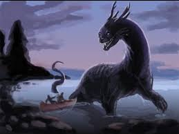

Mishipeshu
Home Page | About the author | Sources| Definitions

An underwater panther, called Mishipeshu or Mishibijiw in Ojibwe is one of the most important of several mythological water beings among many indigenous peoples of the Northeastern Woodlands and Great Lakes region, particularly among the Anishinaabe. Mishipeshu translates into the Great Lynx
. It has the head and paws of a giant cat but is covered in scales and has dagger-like spikes running along its back and tail.